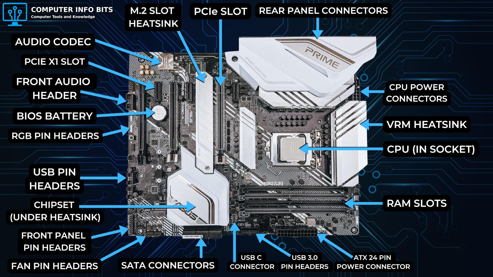
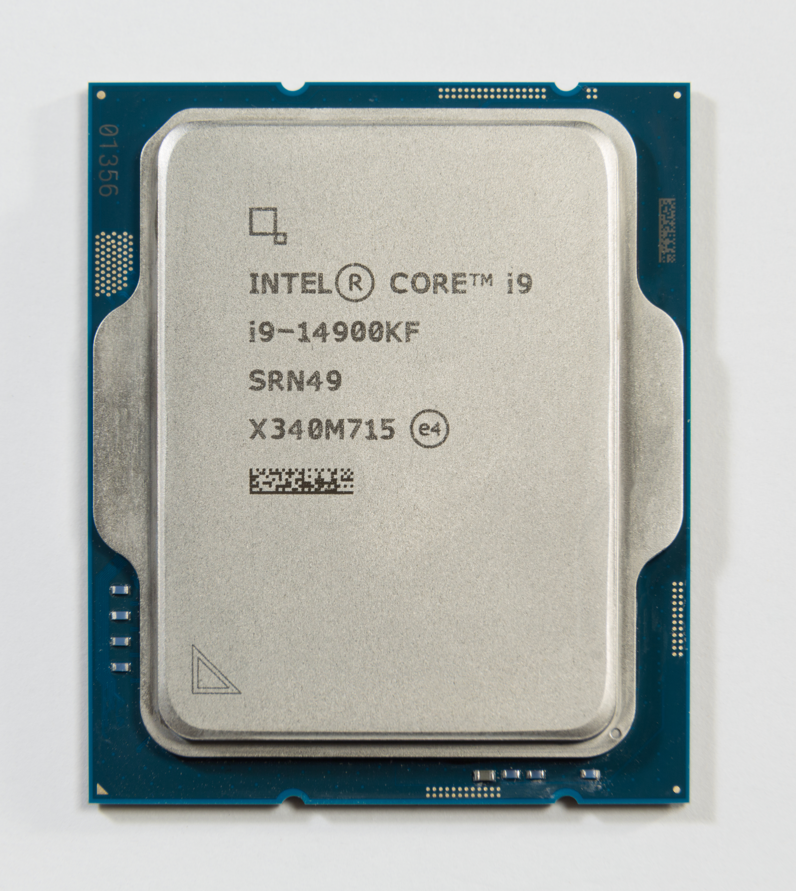

Matična ploča · 1 / 10
Uloga matične ploče
Matična ploča povezuje procesor, RAM, pohranu i dodatne uređaje. Vodovi i priključci omogućuju prijenos podataka i napajanja. Ona nije sama procesor.
Matična ploča povezuje procesor, RAM, pohranu i dodatne uređaje. Vodovi i priključci omogućuju prijenos podataka i napajanja. Ona nije sama procesor.

Ploča ima vodljive staze, više slojeva, sklopove, utore i priključke. Raspored se razlikuje po modelu, pojednostavljena shema služi samo za orijentaciju.
ATX, microATX i Mini-ITX primjeri su formata. Format utječe na dimenzije i broj dostupnih mjesta za proširenja. Prije kupnje provjeri podršku kućišta i položaj odstojnika.
CPU se postavlja u točno određeno ležište (socket). Oblik ležišta nije dovoljan dokaz kompatibilnosti: provjeri službeni popis podržanih CPU-a i verziju UEFI-ja.
DIMM utori prihvaćaju module radne memorije. Provjeri generaciju DDR-a, kapacitet i preporučene utore u priručniku ploče. DDR4 i DDR5 nisu međusobno zamjenjivi.
PCIe utori služe karticama za proširenje, primjerice grafičkoj ili mrežnoj. Duljina utora i broj električnih linija nisu nužno ista stvar. Upute ploče određuju mogućnosti.
M.2 utor može prihvatiti odgovarajući SSD, a SATA priključak povezuje SATA uređaje podatkovnim kabelom. Nije svaki M.2 utor jednak: provjeri podršku za NVMe/PCIe ili SATA.
24-pinski ATX dovodi napajanje ploči. Zasebni CPU/EPS priključak opskrbljuje procesor. USB, audio i prekidači prednje ploče spajaju se na odgovarajuće unutarnje priključke.
UEFI inicijalizira računalo prije učitavanja operacijskog sustava. Čipset i dizajn ploče utječu na dostupne USB, PCIe i priključke pohrane. Stražnji panel može imati mrežu, USB, zvuk i video.
Za odabir ploče provjeri format, socket, podržane procesore, vrstu RAM-a, PCIe/M.2/SATA utore, vanjske priključke i UEFI. Zapiši točan model, ne samo naziv proizvođača.
CPU je središnja procesorska jedinica koja izvršava programske naredbe i obrađuje podatke. Povezan je s RAM-om i drugim uređajima preko matične ploče.

Pojednostavljeno: procesor dohvaća naredbu iz memorije, dekodira je i izvršava. Rezultat može spremiti ili proslijediti drugim dijelovima sustava.
Jezgra je fizička izvršna jedinica unutar procesora. Više jezgri može omogućiti istodobni rad na više zadataka, ako programi to mogu iskoristiti. Broj jezgri sam ne određuje brzinu.
Hardverske dretve ili logički procesori način su raspoređivanja rada na jezgrama, ovisno o arhitekturi. Dvije dretve na jezgri ne znače dvije fizičke jezgre.
Takt se iskazuje u GHz. Radna frekvencija može se mijenjati ovisno o opterećenju, temperaturi i ograničenjima napajanja. Različite procesore ne uspoređujemo samo prema GHz.
Cache (npr. L1, L2 i L3) čuva često korištene podatke bliže jezgrama. Manji je, ali znatno brži od RAM-a. RAM ima veću ulogu u čuvanju podataka aktivnih programa.
Procesor se sastoji od aritmetičko-logičke jedinice (ALU), upravljačke jedinice (CU) te skupa registara. različite arhitekture organiziraju ih na različite načine. Integrirana grafika postoji samo na određenim modelima.
CPU proizvodi toplinu. Hladnjak i ventilator ili odgovarajuće vodeno hlađenje odvode toplinu. Termalna pasta poboljšava dodir između CPU-a i hladnjaka. Provjeri kompatibilnost nosača i priključak CPU_FAN.
Prije ugradnje provjeri službeni popis podržanih procesora, socket, čipset i UEFI. Isključi napajanje, zaštiti komponente od ESD-a, primi CPU za rubove i postavi ga prema oznaci bez sile.
Nakon montaže provjeri CPU/EPS napajanje, hladnjak, CPU_FAN i RAM. U UEFI-ju provjeri prepoznati model CPU-a i temperaturu. Objasni kako ploča, CPU, memorija i hlađenje surađuju.